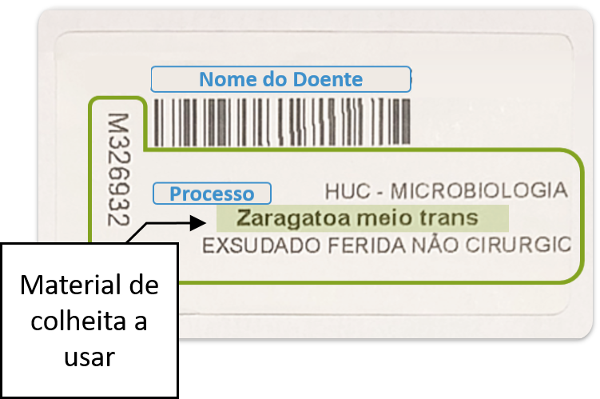

m<!DOCTYPE html>
<html lang="pt">
<head>
  <meta charset="UTF-8" />
  <title>Pesquisa por Imagem</title>
  <meta name="viewport" content="width=device-width, initial-scale=1.0" />
  <style>
    body {
      margin: 0;
      font-family: sans-serif;
      background: #fafbfc;
      min-height: 100vh;
      display: flex;
      flex-direction: column;
      align-items: center;
    }

    .container {
      width: 100%;
      max-width: 600px;
      padding: 10px;
      box-sizing: border-box;
    }

    .top-img {
      width: 90%;
      max-height: 50vh;
      object-fit: cover;
      margin: 0 auto 40px auto;
      display: block;
    }

    .search-box {
      margin-bottom: 20px;
      display: flex;
      flex-direction: row;
      align-items: center;
      justify-content: center;
      gap: 10px;
    }

    .search-box input[type="text"] {
      font-size: 1.0em;
      padding: 12px;
      width: 70%;
      box-sizing: border-box;
      background-color: #fff;
      color: #333;
      border: 1px solid #1565c0;
      border-radius: 3px;
      margin-bottom: 0;
    }

    .search-box button {
      font-size: 1.0em;
      padding: 14px 24px;
      border-radius: 1px;
      background: #83a321;
      color: #fff;
      border: none;
      cursor: pointer;
      transition: background 0.2s;
    }

    .search-box button:hover {
      background: #83a321;
    }

    #imageContainer {
      width: 100%;
      max-width: 600px;
      height: 30vh;
      background: #5d9ad3;
      margin-top: 0.1rem;
      display: flex;
      align-items: center;
      justify-content: center;
      color: #fff;
      font-size: 1.2em;
      position: relative;
      overflow: hidden;
      padding: 0.5rem;
    }

    #result {
      max-height: 100%;
      max-width: 100%;
      object-fit: contain;
      display: none;
      position: static;
    }

  </style>
</head>
<body>

  <p style="font-size: 1.2em; margin-block: 1.5rem 0.5rem; text-align: center;">
    Siga abaixo os <b>passos 1 a 4</b>:
  </p>
  
  <div class="container">
    

    <form class="search-box" onsubmit="showImage(event)">
        <input
          type="text"
          id="searchInput"
          value="2. Inserir material de colheita"
          required
        />
    <button type="submit">3. Enter</button>
    </form>
  </div>

  <div id="imageContainer">
    <span id="placeholderText">4. Veja AQUI o material de colheita a usar</span>
    
  </div>

  <footer style="text-align: center; padding: 20px; color: #555; font-size: 10px;">
    <br>
    Sector de Bacteriologia, Laboratório de Microbiologia<br>
    <strong>Serviço de Patologia Clínica</strong><br>
    
  </footer>

  <script>
  const imageMap = {
    "zaragatoa meio trans": "https://raw.githubusercontent.com/microbiologiachuc/micro/main/zaragatoa_meio_trans.png",
    "zar. meio transporte": "https://raw.githubusercontent.com/microbiologiachuc/micro/main/zaragatoa_meio_trans.png",
    "zaragatoa": "https://raw.githubusercontent.com/microbiologiachuc/micro/main/zaragatoa_meio_trans.png",
    "zaragatoa esbl": "https://raw.githubusercontent.com/microbiologiachuc/micro/main/zaragatoa_esbl.png",
        "c.esterilizado": "https://raw.githubusercontent.com/microbiologiachuc/micro/main/contentor.png",
    "cont esterilizado": "https://raw.githubusercontent.com/microbiologiachuc/micro/main/contentor.png",
    "c. esterilizado": "https://raw.githubusercontent.com/microbiologiachuc/micro/main/contentor.png",
    "c.estéril(ag)(fezes)": "https://raw.githubusercontent.com/microbiologiachuc/micro/main/contentor.png",
    "cont. esteril (ji)": "https://raw.githubusercontent.com/microbiologiachuc/micro/main/cont._esteril_(ji).png",
    "fr. portagermen": "https://raw.githubusercontent.com/microbiologiachuc/micro/main/portagermen.png",
    "frasco portagermen": "https://raw.githubusercontent.com/microbiologiachuc/micro/main/portagermen.png",  
    "fr. hemocultura": "https://raw.githubusercontent.com/microbiologiachuc/micro/main/fr._hemocultura.png",
    "fr hemocultura": "https://raw.githubusercontent.com/microbiologiachuc/micro/main/fr._hemocultura.png",
    "hemocultura": "https://raw.githubusercontent.com/microbiologiachuc/micro/main/fr._hemocultura.png",
    "hemocultura 1ª Am": "https://raw.githubusercontent.com/microbiologiachuc/micro/main/fr._hemocultura.png",
    "hemocultura 2ª Am": "https://raw.githubusercontent.com/microbiologiachuc/micro/main/fr._hemocultura.png",
    "hemocultura 3ª Am": "https://raw.githubusercontent.com/microbiologiachuc/micro/main/fr._hemocultura.png", 
    "frasco hemocultura": "https://raw.githubusercontent.com/microbiologiachuc/micro/main/fr._hemocultura.png",
    "hemo micobact": "https://raw.githubusercontent.com/microbiologiachuc/micro/main/hemo_micobact.png",
    "tubo urocultura": "https://raw.githubusercontent.com/microbiologiachuc/micro/main/urocultura.png", 
    "(pcr) sangue": "https://raw.githubusercontent.com/microbiologiachuc/micro/main/edta_2.7ml.png",
    "edta k3 (bm)": "https://raw.githubusercontent.com/microbiologiachuc/micro/main/edta_2.7ml.png",
    "aspirado dreno": "https://raw.githubusercontent.com/microbiologiachuc/micro/main/contentor.png",
    "dst - t. multiplo": "https://raw.githubusercontent.com/microbiologiachuc/micro/main/dst_-_t._multiplo.png",
    "control esteril.": "https://raw.githubusercontent.com/microbiologiachuc/micro/main/*.png",
    "controlo esterilidad": "https://raw.githubusercontent.com/microbiologiachuc/micro/main/*.png",
    "edta k3 (bm)": "https://raw.githubusercontent.com/microbiologiachuc/micro/main/*.png",
    "eppendorf pcr tampao": "https://raw.githubusercontent.com/microbiologiachuc/micro/main/*.png",
    "fr.mycoplasma r1": "https://raw.githubusercontent.com/microbiologiachuc/micro/main/*.png",
    "fungo": "https://raw.githubusercontent.com/microbiologiachuc/micro/main/*.png",
    "men/pneum l.pleu/out": "https://raw.githubusercontent.com/microbiologiachuc/micro/main/*.png",
    "mening/pneu plasma": "https://raw.githubusercontent.com/microbiologiachuc/micro/main/*.png",
    "micopl.": "https://raw.githubusercontent.com/microbiologiachuc/micro/main/*.png",
    "mycoplasma/chlam": "https://raw.githubusercontent.com/microbiologiachuc/micro/main/*.png",
    "zar.seca(ags)(aso)": "https://raw.githubusercontent.com/microbiologiachuc/micro/main/*.png",
    "tubo esterilizado": "https://raw.githubusercontent.com/microbiologiachuc/micro/main/*.png",
    "tubo c/gel": "https://raw.githubusercontent.com/microbiologiachuc/micro/main/*.png",
    "": "https://raw.githubusercontent.com/microbiologiachuc/micro/main/*.png",
    "": "https://raw.githubusercontent.com/microbiologiachuc/micro/main/*.png",
    "": "https://raw.githubusercontent.com/microbiologiachuc/micro/main/*.png",
    
    
  };

  // Novo objeto para mapear URLs
  const urlMap = {
    "zaragatoa meio trans": "",
    "c. esterilizado": "https://drive.google.com/file/d/1bZ7TRORGZ6s0DfUnzfqudRQt6prSPu2Q/view?usp=drive_link",
  };

  const searchInput = document.getElementById("searchInput");
  const defaultText = "1. Inserir texto assinalado";
  const img = document.getElementById("result");
  const placeholder = document.getElementById("placeholderText");

  // Sempre que houver clique/toque, limpa o campo
  searchInput.addEventListener("pointerdown", function () {
    this.value = "";
  });

  // Se sair do campo sem escrever nada, repõe o texto por defeito
  searchInput.addEventListener("blur", function () {
    if (this.value.trim() === "") {
      this.value = defaultText;
    }
  });

  function showImage(event) {
    event.preventDefault();

    const input = searchInput.value.trim().toLowerCase();

    if (imageMap[input]) {
      img.src = imageMap[input];
      img.alt = input;
      img.style.display = "block";
      placeholder.style.display = "none";

      // Atualiza o atributo data-url para a imagem
      img.dataset.url = urlMap[input] || null;
    } else {
      img.style.display = "none";
      placeholder.style.display = "block";
      alert("Nenhuma imagem encontrada.");
      searchInput.value = defaultText;
      searchInput.blur(); // tira o foco
      img.dataset.url = null; // remove url se imagem não encontrada
    }
  }

  // Evento para abrir a URL ao clicar na imagem, se existir
  img.addEventListener("click", function () {
    const url = this.dataset.url;
    if (url) {
      window.open(url, "_blank");
    }
  });
</script>


</body>
</html>
